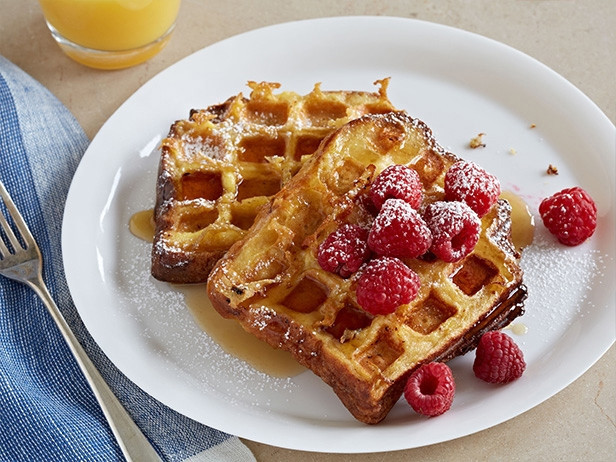

Ingredients
- 1 1/2 cups milk
- 3 tablespoons sugar
- 1 teaspoon pure vanilla extract
- Pinch salt
- 5 large eggs
- Four 1 1/2-inch-thick slices brioche or challah bread
- Melted unsalted butter, for brushing waffle iron
- Maple syrup, raspberries and confectioners' sugar, for topping
- Special equipment: waffle iron (preferably Belgian style)
Method of Cooking
- Preheat a waffle iron to medium-high. Preheat the oven to 200 degrees F (to keep cooked waffles warm). Whisk together the milk, sugar, vanilla, salt and eggs in a bowl or baking dish. Soak a piece of bread in the mixture for 2 minutes per side.
- Lightly brush the top and bottom of the waffle iron with butter. Place the soaked bread on the waffle iron and close gently (don't push down). Cook until golden brown and dry underneath when you lift a corner, 5 to 6 minutes. Keep the warm in the oven or covered with foil on a plate. Repeat with the remaining bread.
- Top the French toast with syrup, raspberries and confectioners' sugar.